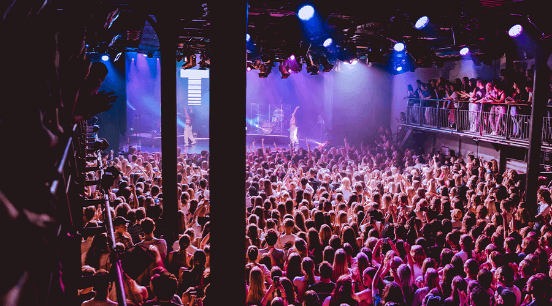

bezoekersinfo
- 
Contact & bereikbaarheid
- 020-53181
- info@melkweg
-
Lijnbaansgracht 234a
-
1017 PH Amsterdam
-
Openbaar vervoer

-
Parkeren fiets
-
parkeren auto
Praktische informatie
Over je bezoek
Lockers
Je kunt bij ons gebruik maken van lockers om je jas en overige spullen in op te bergen. Een locker huur je op één van de volgende manieren: Scan de QR-code op de posters buiten in de rij bij de ingang of in de foyer. Je komt dan op de website van Keynius terecht en kunt online een locker huren. Na betaling krijg je per mail instructies om de locker te openen. Als je geen bereik of mobiel internet hebt kun je in ons pand gratis gebruik maken van ons wifi-netwerk 'Melkweg'. Is bovenstaande voor jou niet mogelijk, bijvoorbeeld omdat je geen smartphone hebt of je batterij leeg is? Dan kun je terecht bij onze collega’s bij de servicebalie in de foyer op de begane grond. Zij helpen je graag verder! De door jou gehuurde locker is gedurende je bezoek ook tussendoor te openen en sluiten, én gemakkelijk te delen met de rest van je gezelschap.
Tijdschema's
In de agenda staat bij elk programma een aanvangstijd, dat is de tijd dat de zaal open gaat. Bij concerten wordt het volledige tijdschema van de avond in de meeste gevallen ongeveer een week van tevoren bekendgemaakt in de agenda. Aanvangstijden zijn altijd onder voorbehoud van wijzigingen.
Eindtijden
De lengte van een optreden wordt bepaald door de artiest, we kunnen bij concerten dus geen eindtijd aangeven. In de meeste gevallen speelt de hoofdact maximaal anderhalf uur. Clubnachten duren gewoonlijk tot 04.00 of 05.00 uur. Bij films staat in de agenda aangegeven hoe lang deze duren.
Minimumleeftijd
Bij onze concerten en films geldt een minimumleeftijd van 6 jaar, tenzij anders is aangegeven. Bezoekers jonger dan 14 jaar raden we bij concertbezoek aan om samen met iemand van 18 jaar of ouder te gaan. Bij clubnachten staat op de agendapagina van de desbetreffende nacht altijd aangegeven wat de minimumleeftijd is. Over het algemeen geldt voor clubnachten een minimumleeftijd van 18 jaar.
Kaartverkoop
Tickets
De makkelijkste manier om tickets te kopen is via de knop ‘TICKETS’, die bij elk programma in de agenda staat. Aan de kassa zijn zowel tickets in de voorverkoop verkrijgbaar als voor de dag zelf. Let op: Melkweg.nl en Ticketmaster.nl zijn de enige officiële verkoopsites. Andere sites die tickets aanbieden zijn doorverkopers. Je betaalt hier vaak een veel hoger bedrag en je loopt het risico ongeldige tickets te kopen.
Servicekosten
Bij het aanschaffen van tickets voor onze programma’s betaal je servicekosten, deze kosten bedragen 15% van de ticketprijs. Zowel aan onze kassa als online via de website van Ticketmaster zijn dit de enige bijkomende kosten. Bij sommige (nacht)programma’s is er sprake van een aangepaste deurverkoopprijs. Indien dit het geval is, staat dit vermeld op onze website. Deze prijs geldt vanaf een half uur voor aanvang van het betreffende programma.
Verplaats programma
Indien een programma verplaatst wordt naar een nieuwe datum, dan blijven reeds gekochte tickets en lidmaatschappen gewoon geldig voor deze nieuwe datum. Ben je onverhoopt verhinderd, dan kun je restitutie aanvragen via de website van Ticketmaster. Je krijgt dan het bedrag van je tickets + servicekosten en eventuele lidmaatschappen teruggestort op de rekening of credit card die is gebruikt voor de aankoop. Restitutie aanvragen kan tot één dag voor de nieuwe datum van het programma.
Afgelast programma
Indien een programma verplaatst wordt naar een nieuwe datum, dan blijven reeds gekochte tickets en lidmaatschappen gewoon geldig voor deze nieuwe datum. Ben je onverhoopt verhinderd, dan kun je restitutie aanvragen via de website van Ticketmaster. Je krijgt dan het bedrag van je tickets + servicekosten en eventuele lidmaatschappen teruggestort op de rekening of credit card die is gebruikt voor de aankoop. Restitutie aanvragen kan tot één dag voor de nieuwe datum van het programma.